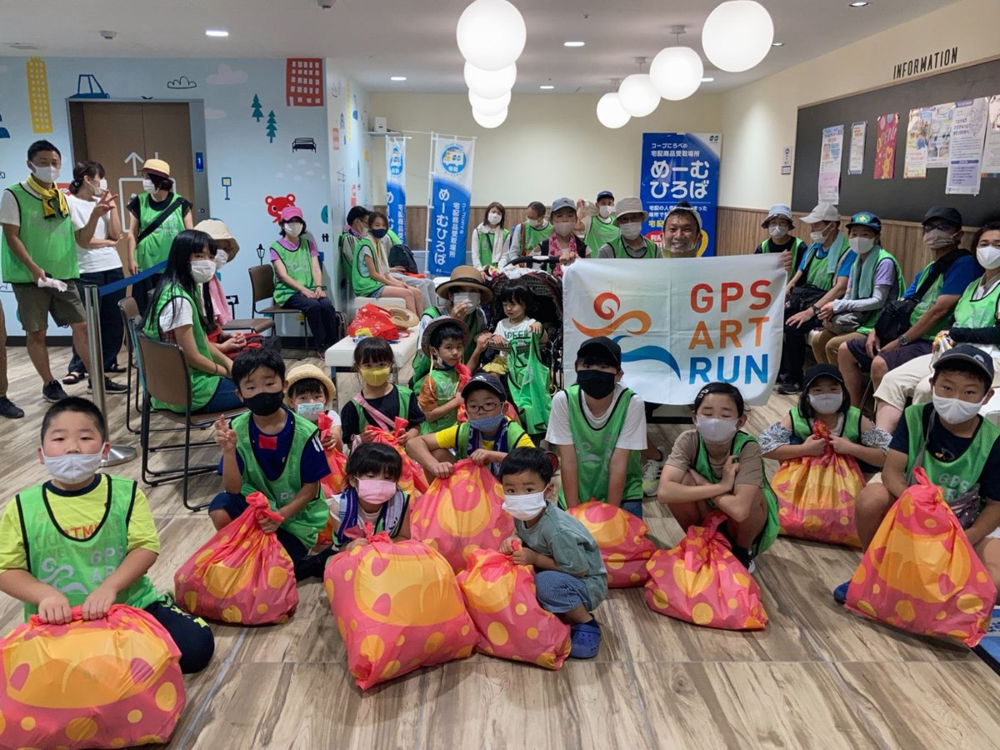
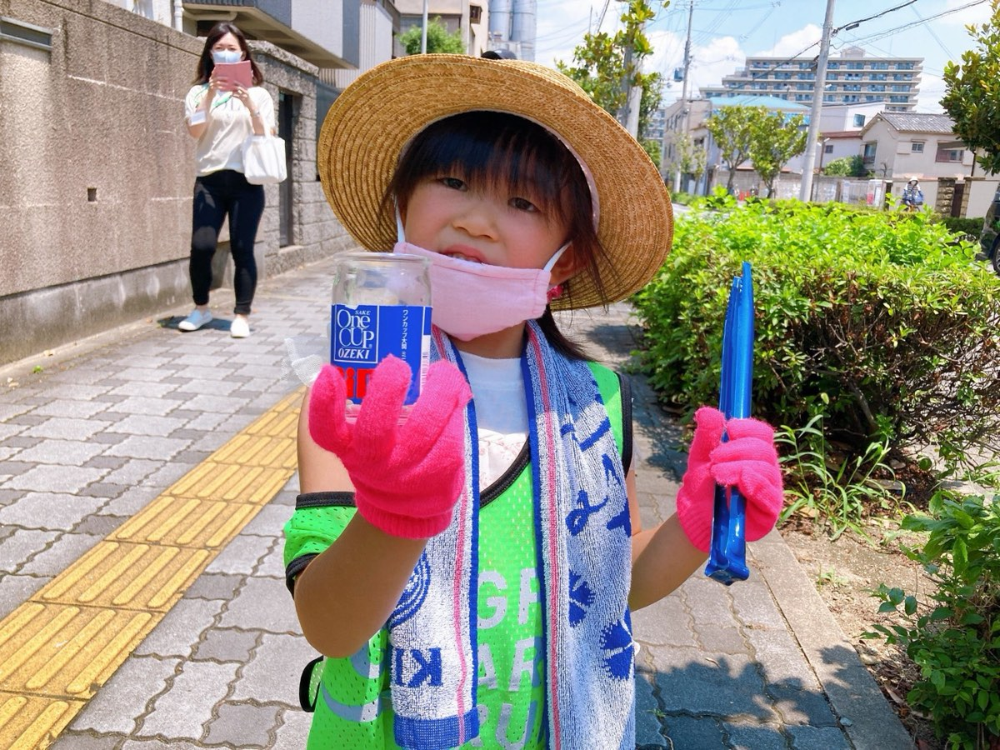

GPS RUNNER
CASE STUDIES
企業コラボ・海外プロジェクト・学校/自治体での講演・メディア出演など、これまでの取り組みをご紹介します。

90日間・4600km。人類史上最大級のGPSアートに挑んだ南米ペルーでの挑戦。

16店舗・約250名が参加。創設100周年記念のSDGsプロギングを実施。

NHK・イッテQ・MBS・神戸新聞ほか、世界12ヵ国160以上のメディアで紹介。
分譲マンション入居者の交流イベント。京都・高槻ほかで継続開催。

南三陸町での教育ボランティア、釜石〜仙台200km縦断。「人のつながり」を伝える活動。

走って出会った各地の食・酒を、料理を通して全国へ伝える教育活動。
周年事業・SDGs施策・観光PR・健康づくり・教育講演など、目的に合わせて企画します。実績多数。